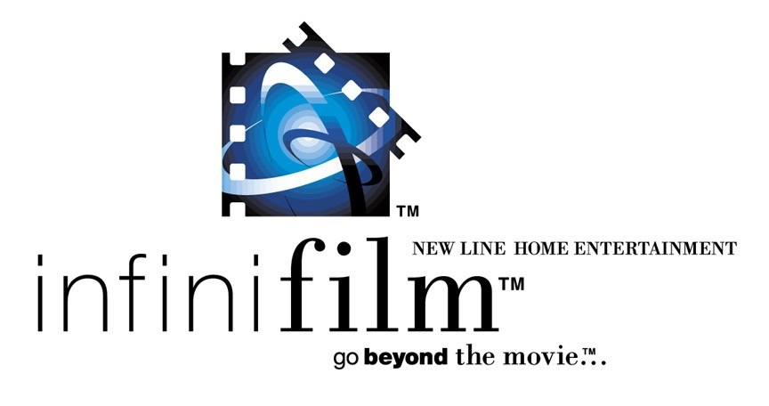

|
Infinifilm:  Is
Infinifilm just a clever public relations campaign to brand New Line's special editions? Judging
from the initial Infinifilm DVD release Thirteen Days, this new breed of special edition stretches
the limits of the DVD medium to provide a huge amount of historical supplemental material to
compliment the feature film. Part of the Infinifilm hype is that these special editions will be
easier for Joe Public to understand and fully utilize. |